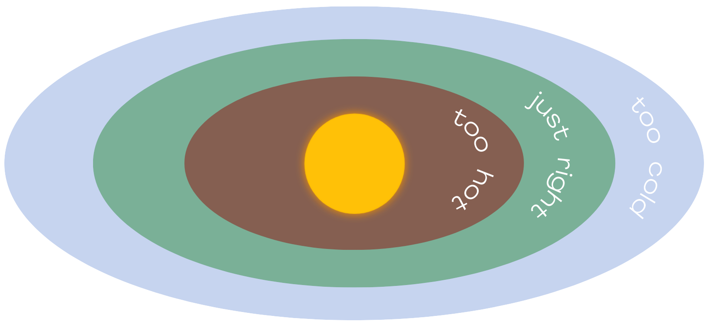

Earth is the third planet from the Sun and the fifth biggest planet in the solar system by size and mass. Its most distinguishing trait is that its near-surface conditions are the only sites in the cosmos known to support life.
PARTS OF THE EARTH
|
MOON A moon is an object orbiting a planet that is not a star.
Moons are usually made of rock like the Earth’s moon but some of the other moons are Earth's water is redistributed as a result of the Moon's gravitational pull on the planet as well as other tangential factors, resulting in water bulges on the sides that are closest to and farthest from the moon. This allows water to reach farther places for the use of other organisms. |

|
WHAT MAKES THE EARTH
HABITABLE?
|  |
GOLDILOCKS ZONE The Earth is located in what is called the Goldilocks zone, where the temperatures are just right for life forms to live.
Being in the Goldilocks zone means that a planet that has the surface temperature that allows water to stay liquid which is required for life. |
|
ROTATION SPEED The Earth’s rotation plays a vital role on how much sunlight living organisms get as they require a certain amount of sunlight to live. If the Earth stopped rotating, one half of Earth would constantly be hot and in the light, while the other half would always be freezing and in the dark. |

|
|
ATMOSPHERE Earth’s atmosphere is composed of about 78% nitrogen, 21% oxygen, and one percent other gases. |
|
ORGANIC MOLECULES Carbon is the fourth most abundant element in the universe and is the building block of life on Earth. Life wouldn't be possible without it because it makes up the four macromolecules (carbohydrates, proteins, lipids, & nucleic acid) that provide the necessary functions for life. |

|
REFERENCES |
|
1.) Chapman, C. R., Jeanloz, R., & Lunine, J. I. (2024, March 27). Earth | Definition, Size, Composition, Temperature, Mass, & Facts. Encyclopedia Britannica. https://www.britannica.com/place/Earth 2.) Crust. (n.d.). Retrieved from https://education.nationalgeographic.org/resource/crust/ 3.) Sigurdsson, H. (2015). Introduction. In Elsevier eBooks (pp. 1–12). https://doi.org/10.1016/b978-0-12-385938-9.02001-0 4.) The Editors of Encyclopaedia Britannica. (2024, February 16). Asthenosphere | mantle layer, plate tectonics & thermal plumes. Retrieved from https://www.britannica.com/science/asthenosphere 5.) Mantle. (n.d.). Retrieved from https://education.nationalgeographic.org/resource/mantle/ 6.) Core. (n.d.). Retrieved from https://education.nationalgeographic.org/resource/core/ 7.) Moon. (n.d.). Retrieved from https://education.nationalgeographic.org/resource/moon/ 8.) Tides. (n.d.). Retrieved from https://science.nasa.gov/moon/tides/ 9.) A safe location. (n.d.). Retrieved from https://education.nationalgeographic.org/resource/safe-location/ 10.) Goldilocks Principle. (n.d.). Retrieved from https://education.nationalgeographic.org/resource/goldilocks-principle/ 11.) Rotation. (n.d.). Retrieved from https://education.nationalgeographic.org/resource/rotation/What is gravity? | NASA Space Place – NASA Science for Kids. (n.d.). Retrieved from https://spaceplace.nasa.gov/what-is-gravity/en/ 12.) Atmosphere. (n.d.). Retrieved from https://education.nationalgeographic.org/resource/resource-library-atmosphere/ 13.) National Library of Medicine. (n.d.). Carbohydrates. Retrieved from https://medlineplus.gov/carbohydrates.html 14.) Thompson, T. E. (2024, February 16). Lipid | Definition, Structure, Examples, Functions, Types, & Facts. Retrieved from https://www.britannica.com/science/lipid 15.) Roberts, R. J. (2024, March 5). Nucleic acid | Definition, Function, Structure, & Types. Retrieved from https://www.britannica.com/science/nucleic-acid |